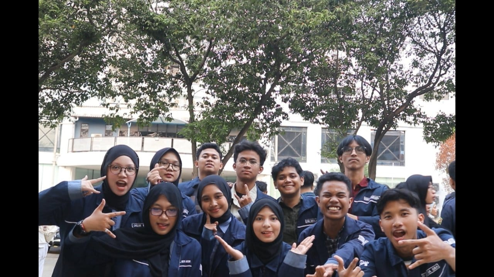

Profil Laboratorium
Laboratorium Multimedia menyediakan fasilitas komputer performa tinggi dan perangkat audio-visual untuk mendukung kegiatan praktikum, pengerjaan proyek kreatif, animasi, penyuntingan video, hingga pengembangan UI/UX.
Layanan & Layanan Utama
- Pelaksanaan praktikum mata kuliah berbasis multimedia dan desain.
- Peminjaman studio rekaman audio dan pengisian suara (voice over).
- Peminjaman kamera, lighting, dan perlengkapan pameran karya.
- Pelatihan software kreatif dan sertifikasi keahlian multimedia.
Tim Asisten Laboratorium
